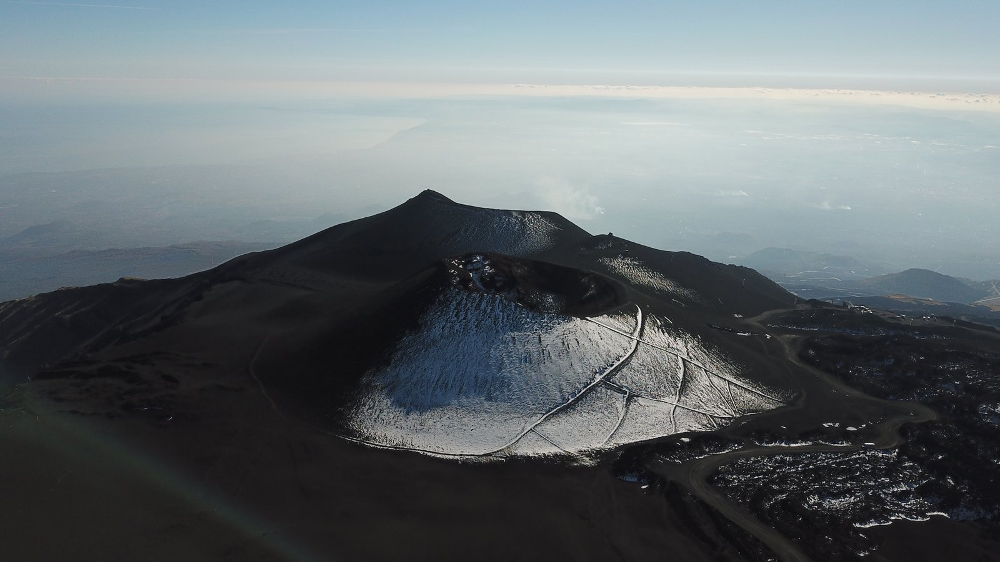
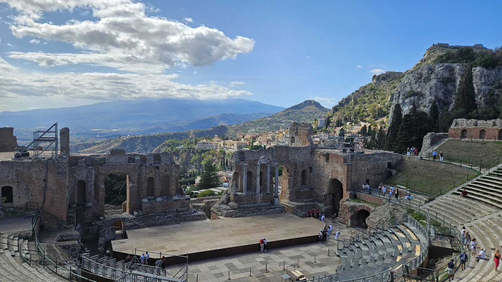
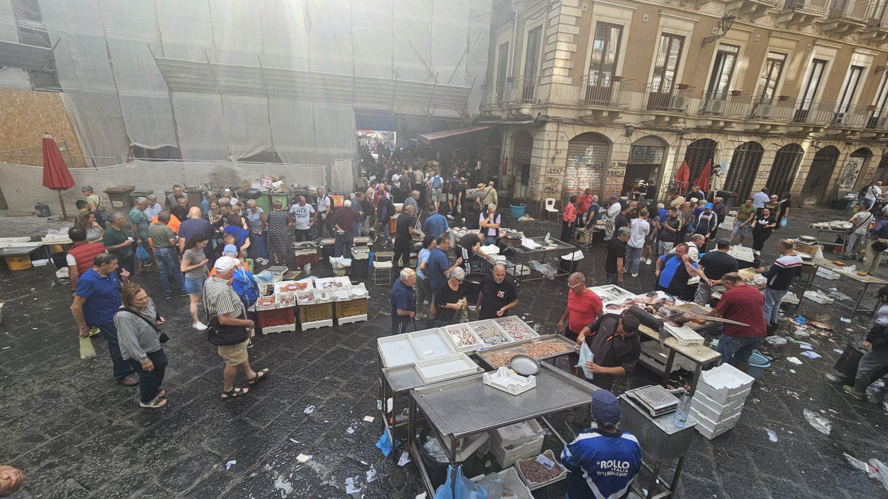
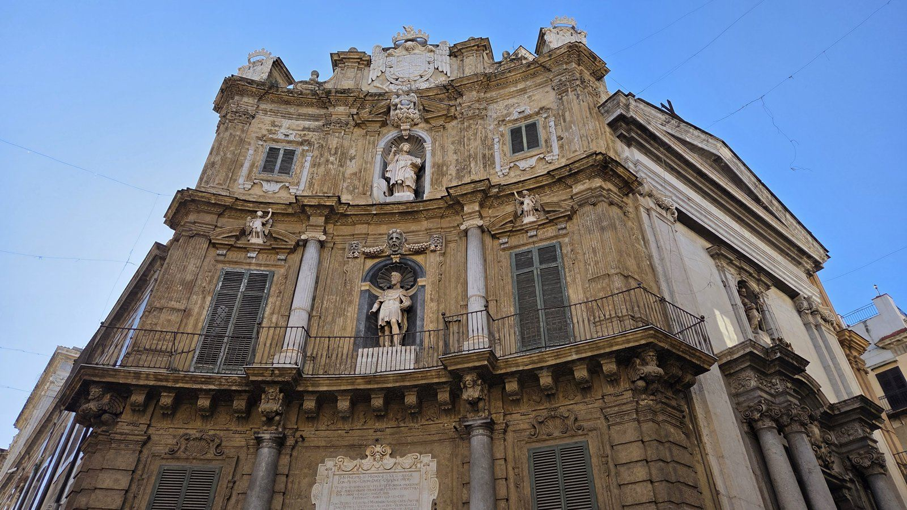

Z cest
Sicílie pětkrát: Etna, Taormina, Syrakusy, Catania a Palermo
Destinace a úvod
Sicílie je pro mě ideální cíl na prodloužený víkend mimo sezónu. Létá se sem levně z letišť, odkud běžně létám, a z Catanie se dá všechno podstatné objet autobusem, bez půjčování auta.
Moje cesty:
říjen 2018 – Catania, 4 noci, čtyři kamarádi, Wizz Air z Katowic
říjen 2019 – Catania, 26.–29. 10., 3 noci, s manželkou, z Vídně
leden 2024 – Catania, 16.–18. 1., s kamarádem, z Katowic
říjen 2024 – Catania, 3.–7. 10., se známými ve čtyřech, Ryanair z Vídně
leden 2026 – Palermo, 13.–15. 1., šest chlapů, Wizz Air z Bratislavy

Letenka
2018: Wizz Air Katowice – Catania, cca 1 800 Kč zpáteční.
2019: z Vídně, cca 1 400 Kč.
leden 2024: Katowice – Catania, cca 1 200 Kč.
říjen 2024: Ryanair Vídeň – Catania, 1 950 Kč na osobu.
leden 2026: Wizz Air Bratislava – Palermo, 50 EUR na osobu.
Doprava na letiště
Katowice (2018): parkoviště P2 za 7 zlotých za celý pobyt – v době velkých slev pro cizince. Dnes (2026) stojí stejné parkování kolem 100 zlotých.
Vídeň (říjen 2024): parkování 1 000 Kč a dálniční známka 300 Kč.
Bratislava (2026): parkování Monti, 30 EUR.
Ubytování
2018, Airbnb v centru Catanie: 5 200 Kč za 4 noci pro 4 lidi. Byli jsme čtyři chlapi, tak jsem hledal byt se čtyřmi samostatnými postelemi. Za ty peníze super, v centru, 100 metrů od autobusu na letiště. Horší to bylo s čistotou a byt byl dost vlhký. Na přespání v pohodě, s rodinou a dětmi bych volil jinak.
2019, Holidays in Catania (Booking): 2 800 Kč za 3 noci pro dva. Super místo, jen v noci hluk z ulice – měli jsme špunty, takže v pohodě. Volil bych klidně znovu.
leden 2024: apartmán asi pět minut pěšky od rybího trhu.
říjen 2024: ubytování přes Booking za 400 EUR pro čtyři, tedy 100 EUR na osobu za 4 noci.
leden 2026, Mercure Palermo Centro: pokoj se snídaní za 102 EUR za celý pobyt.
Místní doprava
Z letiště v Catanii do centra: Alibus, zastávka hned vlevo, jak vyjdete z haly. Jezdí zhruba každých 25 minut, v roce 2018 stál 4 EUR jedním směrem. Ve čtyřech jsme do města jeli taxíkem za 25 EUR, zpátky Alibusem.
Při další cestě (2019) jsem zkoušel městské linky 524 a 538 – zastávka je asi 400 metrů od letiště: z haly vlevo pod rampu k odletům, po chodníku rovně na kruhový objezd a odtud asi 50 metrů rovně. Lístek stál 1 EUR v automatu na nádraží, u řidiče 1,60 EUR, platí 90 minut. V letištní hale jsme ho koupit nedokázali. Na autobus jsme čekali čtvrt hodiny a nic, pak nás místní černý taxikář vzal za 5 EUR na Piazza Borsellino. Zpátky jsme jeli linkou 524 z Borsellina za 1 EUR.
Výlety z Catanie: autobusy do Taorminy a Syrakus jezdí z autobusového nádraží u vlakového nádraží, lístky se kupují za rohem v prodejně dopravce. Autobus na Etnu (AST) jezdí z vlastního stanoviště o kus blíž k vlakovému nádraží. Do Taorminy i do Syrakus jsem pokaždé jel autobusem a jinak bych to nedělal.
Palermo: z letiště jsme jeli shuttle autobusem Prestia e Comandè. Velká výhoda Palerma je, že městská doprava jezdí až na pláž Mondello.
Program po dnech
Tady nejde o jednu cestu, ale o výlety, které jsem za pět návštěv opravdu udělal.
Etna (2018 a 2019)
Trasa: Catania – Nicolosi – Rifugio Sapienza
Na Etnu jezdí z Catanie jediný autobus denně, v 8.15, a bývá plný – i při druhé návštěvě. Všude jsem četl, že je lepší koupit lístek den předem. To jsme v roce 2018 nestihli, protože nejlepší počasí hlásili hned na další den. Plán B byl jednoduchý: když se nevejdeme, sedneme na autobus do Taorminy, který jezdí kousek vedle.
Lístky se kupují v uličce za rohem, na kterém je bar Terminal. Byli jsme tam kolem půl osmé a vešli jsme se. Zpáteční stál 8,50 EUR (2018), v říjnu 2019 jen 6,60 EUR. Autobus na stání nebral a myslím, že asi tři lidi už nevzali.
Cestou má autobus asi půlhodinovou pauzu v Nicolosi. Dá se dát kafe, nebo asi 300 metrů od náměstí nahoru je obchod, kde se dá koupit svačina. Proč tam stojí, nevím – zpátky už nezastavoval. Konečná je u lanovky, Rifugio Sapienza, 1 900 m n. m. Zpátky jede v 16.30.
Lanovka do 2 500 m stála 30 EUR a doporučuju ji – pěšky je to asi hodina a půl po nic moc cestě pod lanovkou a pak se s časem honíte. V roce 2019 byla na lanovku fronta asi půl hodiny, tak manželka šla pěšky a zvládla to za 45 minut (je ale sportovkyně). Terénní autobus od lanovky do 2 900 m za dalších asi 25 EUR mi přišel zbytečný: ušetří hodinu chůze, cesta je do kopce, ale zvládnutelná, a stejně pak čekáte na autobus do Catanie.
Kde terénní autobusy končí, je zákaz dalšího vstupu. Trochu jsme ho porušili a šli se podívat na kráter po levé straně. Nebyli jsme sami. Zkoušeli jsme to i zkratkou přímo do svahu, ale člověk se v tom štěrku bořil jako ve sněhu, tak jsme se po pěti metrech vrátili a obešli to po cestě. Kráter trochu čadil a ve stínu ležel sníh. Dva z nás šli i k vyšším kráterům, kam se chodí s průvodcem a s přilbou. Kamaráda tam průvodce napomínal, fotil si ho a něco hlásil vysílačkou. Kamarád má zato krásné fotky z okraje kráteru. Mně to za to riziko nestálo.
Na horní stanici lanovky je bar – ochutnali jsme místní 70% likér a dali si pivo za 4 EUR. Počasí bylo přesně podle předpovědi: 8–10 °C, celou dobu slunce, skoro bezvětří. Stačilo triko a mikina, boty jsme měli obyčejné tenisky. Na vyšší krátery bych vzal odolnější. A spálili jsme se.
Taormina a Castelmola (2018, 2019, leden a říjen 2024)
Trasa: Catania – Taormina – Castelmola
Do Taorminy jezdí z Catanie i vlak, ale nádraží je dole u moře a do města je to celý kopec pěšky. Autobus zastavuje kousek od vstupu do města. Zpáteční lístek stál v roce 2018 8,50 EUR.
Taormina je nádherná, byl jsem tam čtyřikrát a jel bych znovu. Od autobusového nádraží jste do kopce asi za 5 minut v centru, na prvním náměstí doleva a dojdete k antickému divadlu. Vstup byl v roce 2018 kolem 4 EUR, v říjnu 2019 už 10 EUR – ale stojí to za to. Divadlo a za ním Etna, asi nejlepší fotka z Taorminy. V říjnu 2024 jsme tam byli první neděli v měsíci a vstup byl zdarma. Pak se projděte po hlavní ulici až na náměstí. Cestou arancini (rýžové koule s náplní) za asi 2,50 EUR – dvě stačí na malý oběd – a citronová granita za asi 2 EUR (ceny 2018).

V lednu 2024 jsme z Taorminy pokračovali autobusem ještě výš do Castelmoly. Odtud je výhled na Taorminu, pobřeží a v lednu i na zasněženou Etnu.
Na pláž pod městem se dá lanovkou nebo autobusem. V roce 2018 lanovka zrovna nejela, tak jsme šli pěšky, asi 20 minut. Pláž u Isola Bella mezi dvěma ostrůvky vypadá shora krásně, ale vstup do moře je hrozný – velké oblázky, chodit se po nich nedá. Na koupání bych zkusil jinou pláž dál, to jsme ale nezkoušeli. V roce 2024 jsme se na ni dívali už jen shora.
Tip: nad městem vede křížová cesta, kde je mnohem méně lidí a výhled na divadlo zdarma.
Syrakusy a Ortigia (2018, 2019, říjen 2024)
Trasa: Catania – Siracusa – Ortigia
Autobus jede ze stejného nádraží jako do Taorminy, zpáteční stál v roce 2018 9,60 EUR. Od zastávky jděte přes kruháč podél moře jakoby zpátky – staré město Ortigia je na poloostrově. Jsou tam vykopávky a krásná katedrála (2 EUR v roce 2018, v říjnu 2019 zdarma – možná protože byla neděle a mše). Amfiteátr a archeologický park stály 10 EUR, ty jsme vynechali.
V roce 2018 pršelo a Taormina se nám líbila víc – Syrakusy bych tehdy klidně vynechal. V roce 2019 bylo krásně a dojem z města byl o hodně lepší. V říjnu 2024 jsme jeli znovu autobusem. Takže: na Syrakusy si nechte den s dobrým počasím.
Catania – trhy a podzemní řeka
Trasa: Piazza del Duomo – La Pescheria – Piazza Carlo Alberto
Poslední den jsme v roce 2018 odlétali odpoledne, tak jsme dopoledne stihli trh vedle Piazza del Duomo (náměstí se slonem). Nejdřív to vypadá na pár stánků s rybami, ale pak je to opravdu velký trh s rybami, ovocem a zeleninou. Není nad čerstvé ústřice hned po ránu – tři velké za 4 EUR (2018). Klidně tam strávíte hodinu dvě. Ceny během dne klesají: odpoledne drobné krevety za 3–4 EUR za kilo, kilo tuňáka za 6 EUR – jedno z nejlevnějších, co jsem v Evropě viděl. Podobný je trh na Piazza Carlo Alberto. Na obou jsem si říkal, jak jednoduché je tady žít zdravě a levně. V říjnu 2019 bylo prodejců méně a ceny trochu vyšší, ale pořád paráda. Na trh jsem se vracel při každé další cestě.

V lednu 2024 jsme se v Catanii podívali i pod zem k podzemní řece Amenano.
Palermo (leden 2026)
Trasa: Teatro Massimo – katedrála – Quattro Canti – Fontana Pretoria – Ballarò – Mondello
Do Palerma jsme letěli v lednu 2026 z Bratislavy, šest chlapů. První celý den jsme prošli centrum: Teatro Massimo, katedrálu i s výstupem na její střechu, Quattro Canti a Fontanu Pretoria.

Druhý den trh Ballarò – tam jsem si dal čerstvou šťávu z granátových jablek, výbornou. Pak městskou dopravou na pláž Mondello severně nad městem. I v lednu se tam tři z nás koupali. Já ne, ale voda byla prý celkem v pohodě.
Palermo, nebo Catania? Obojí má něco do sebe. Catania mi slouží jako základna na výlety na Etnu, do Taorminy a Syrakus. V Palermu je super, že městská doprava jezdí až na nádhernou pláž.
Kde jsem jedl
La Pentolaccia, Via Coppola 28/30, Catania – jednoznačně doporučuju a nezklamala mě nikdy. V roce 2018 jsme tam byli třikrát na večeři a všechno bylo výborné: carbonara, rizoto, těstoviny s mořskými plody, gnocchi a na ochutnání koňský karbanátek za 3 EUR. Půllitr vína 4 EUR. Každý den jsem si dal jejich ricottový dort – jeden z nejlepších dezertů, co jsem kdy měl. Večer otevírají až v sedm. V říjnu 2024 jsme tam byli znovu ve čtyřech a účet dělal 65 EUR. Radím mít rezervaci.
Náklady
| Položka | Kdy | Částka |
|---|---|---|
| Letenka Katowice – Catania | 2018 | cca 1 800 Kč |
| Letenka Vídeň – Catania | 2019 | cca 1 400 Kč |
| Letenka Katowice – Catania | 1/2024 | cca 1 200 Kč |
| Letenka Vídeň – Catania (Ryanair) | 10/2024 | 1 950 Kč/os. |
| Letenka Bratislava – Palermo (Wizz Air) | 1/2026 | 50 EUR/os. |
| Airbnb Catania, 4 noci | 2018 | 1 300 Kč/os. |
| Booking Catania, 3 noci | 2019 | 1 400 Kč/os. |
| Ubytování Catania, 4 noci | 10/2024 | 100 EUR/os. |
| Mercure Palermo Centro, pokoj se snídaní, celý pobyt | 1/2026 | 102 EUR |
| Alibus z letiště v Catanii | 2018 | 4 EUR |
| Autobus na Etnu, zpáteční | 2018 / 2019 | 8,50 / 6,60 EUR |
| Lanovka na Etnu, zpáteční | 2018 | 30 EUR |
| Autobus Catania – Taormina, zpáteční | 2018 | 8,50 EUR |
| Autobus Catania – Syrakusy, zpáteční | 2018 | 9,60 EUR |
| Antické divadlo Taormina | 2018 / 2019 / 10/2024 | cca 4 / 10 EUR / zdarma (1. neděle) |
| Večeře v La Pentolaccii, 4 lidi | 10/2024 | 65 EUR |
| Parkování Vídeň + dálniční známka | 10/2024 | 1 000 + 300 Kč |
| Parkování Katowice P2, celý pobyt | 2018 | 7 PLN (dnes kolem 100 PLN) |
| Parkování Bratislava (Monti) | 1/2026 | 30 EUR |
Jídlo a drobné útraty jsem nesledoval.
Postřehy
Ceny jdou nahoru: vstup do divadla v Taormině se mezi 2018 a 2019 zvedl ze 4 na 10 EUR. První neděli v měsíci je ale zdarma.
Na Etnu sledujte předpověď a jeďte v nejlepší den, ostatní výlety se přizpůsobí.
Na Etně se spálíte, i když je 8 °C.
V Palermu stačí městská doprava i na pláž.
Co bych udělal jinak
Lístek na autobus na Etnu bych koupil den předem – vyšlo to, ale o pár míst.
Na Syrakusy bych si nechal den s dobrým počasím; v dešti mě v roce 2018 zklamaly.
Do Taorminy jen autobusem, ne vlakem – z nádraží je to celý kopec.
V Taormině bych se nekoupal pod městem – oblázky jsou na koupání nepoužitelné.
Airbnb v roce 2018 bylo levné, ale vlhké a nepříliš čisté – s rodinou bych si připlatil.
Do La Pentolaccie bych si dnes vždycky rezervoval stůl.